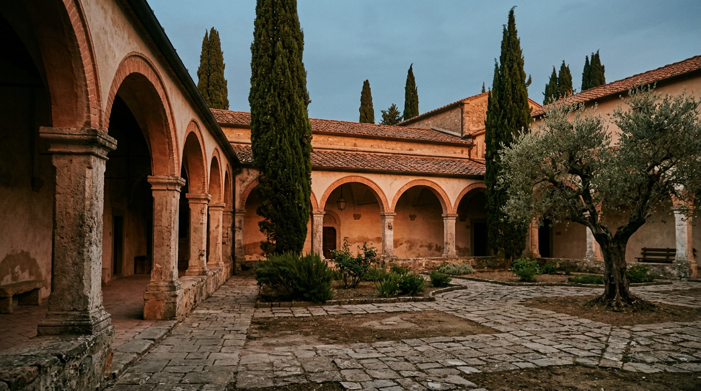

10 febbraio 1944 — il bombardamento di Propaganda Fide.

Il 10 febbraio 1944, poco dopo le nove del mattino, i bombardieri alleati colpirono il Collegio di Propaganda Fide dentro le Ville Pontificie di Castel Gandolfo, un territorio neutrale dove migliaia di civili avevano cercato riparo. Oltre cinquecento persone persero la vita. È la pagina più dolorosa della guerra nel borgo, e ogni anno la comunità torna a ricordarla.
Il fronte arriva ai Castelli
Dopo l'8 settembre 1943 le popolazioni di Castel Gandolfo e dei paesi vicini, prese dal panico, si erano già rifugiate una prima volta nelle Ville Pontificie, protette dai privilegi dell'extraterritorialità riconosciuta dai Patti Lateranensi ([Stato della Città del Vaticano](https://www.vaticanstate.va/it/altri-organismi/castel-gandolfo.html)). Con lo sbarco anglo-americano ad Anzio del 22 gennaio 1944 i Castelli Romani divennero retrovia del fronte: il 30 gennaio fu bombardata Genzano, il 1° febbraio Albano e Ariccia, il 2 febbraio Marino. Genzano ebbe oltre l'80 per cento delle case distrutte o gravemente danneggiate ([Wikipedia](https://it.wikipedia.org/wiki/Bombardamento_di_Propaganda_Fide)).
Il 25 gennaio 1944, per volontà di Pio XII, le Ville Pontificie aprirono i cancelli. L'accoglienza fu coordinata da monsignor Giovanni Battista Montini, il futuro Paolo VI, e da Emilio Bonomelli, direttore delle Ville ([Vatican News](https://www.vaticannews.va/it/vaticano/news/2024-02/castel-gandolfo-1944-mostra-bombardamenti-pio-xii-musei-vaticani.html)). Gli abitanti di Castel Gandolfo trovarono posto nel Palazzo Apostolico, quelli di Albano nella villa estiva di Propaganda Fide; migliaia di altri in baracche e tende allestite nei giardini ([Castel Gandolfo 1944, dossier della mostra](https://www.nyvaticanartpatrons.org/wp-content/uploads/sites/3/2024/05/Castel-Gandolfo-1944.pdf)).
Una città di profughi
All'inizio di febbraio i rifugiati erano oltre dodicimila. Nacque una città improvvisata, con infermerie, una sala maternità, una distribuzione di zuppa, pane, carne e patate, un comitato per gli indigenti ([dossier della mostra](https://www.nyvaticanartpatrons.org/wp-content/uploads/sites/3/2024/05/Castel-Gandolfo-1944.pdf)). Stanze, saloni, scalinate e perfino il criptoportico della villa di Domiziano furono occupati da famiglie intere. Pio XII destinò alle partorienti anche il proprio appartamento: nella camera da letto del Papa nacquero 36 bambini secondo Vatican News, circa quaranta secondo il Governatorato, tra cui due gemelli chiamati Eugenio Pio e Pio Eugenio ([Vatican News](https://www.vaticannews.va/it/vaticano/news/2024-02/castel-gandolfo-1944-mostra-bombardamenti-pio-xii-musei-vaticani.html), [Stato della Città del Vaticano](https://www.vaticanstate.va/it/altri-organismi/castel-gandolfo.html)).
La mattina del 10 febbraio
La speranza durò appena quindici giorni. Il 10 febbraio, verso le 9.15, due ondate di bombardieri colpirono il Collegio di Propaganda Fide e Villa Barberini, in piena zona extraterritoriale ([Vatican News](https://www.vaticannews.va/it/vaticano/news/2024-02/castel-gandolfo-1944-mostra-bombardamenti-pio-xii-musei-vaticani.html), [Wikipedia](https://it.wikipedia.org/wiki/Bombardamento_di_Propaganda_Fide)). Nei giorni precedenti erano già stati distrutti i conventi delle Clarisse e delle Basiliane, con la morte di diverse monache claustrali: sedici secondo Vatican News, diciotto secondo il Governatorato.
Il numero delle vittime non fu mai accertato, anche per la lacunosità dei registri di morte conservati presso il Tribunale di Velletri. Il Governatorato vaticano parla di oltre cinquecento morti e numerosi feriti; il Comune ha censito 211 residenti di Castel Gandolfo uccisi; alcune testimonianze parlano di settecento e perfino di millecento vittime ([Wikipedia](https://it.wikipedia.org/wiki/Bombardamento_di_Propaganda_Fide), [Stato della Città del Vaticano](https://www.vaticanstate.va/it/altri-organismi/castel-gandolfo.html)).
“Il ricovero di speranza si trasformò in luogo di dolore.”Card. Fernando Vérgez Alzaga, febbraio 2024
Accuse e smentite
Secondo gli Alleati l'attacco rientrava nelle operazioni per interrompere le linee logistiche tedesche verso Cassino e Anzio; il 5 febbraio il quartier generale di Algeri aveva segnalato presenze tedesche presso il Palazzo Pontificio. La Santa Sede smentì recisamente: a Washington il delegato apostolico Amleto Cicognani dichiarò, su incarico del cardinale Maglione, che nessun soldato tedesco era stato ammesso entro le mura della villa ([Wikipedia](https://it.wikipedia.org/wiki/Bombardamento_di_Propaganda_Fide)). Dopo il bombardamento la villa divenne un ospedale improvvisato e i profughi furono gradualmente trasferiti a Roma, nel Lazio, in Umbria e nelle Marche; in marzo e aprile ne restavano quasi cinquemila ([dossier della mostra](https://www.nyvaticanartpatrons.org/wp-content/uploads/sites/3/2024/05/Castel-Gandolfo-1944.pdf)). Molti rimasero fino alla liberazione di Roma, il 4 giugno ([Stato della Città del Vaticano](https://www.vaticanstate.va/it/altri-organismi/castel-gandolfo.html)).
La memoria
Ogni 10 febbraio le strade di Castel Gandolfo e delle Ville sono attraversate dalla Marcia della Pace, promossa dai comuni di Castel Gandolfo e Albano con l'Associazione Storia e Memoria dei Castelli Romani, già Associazione dei famigliari delle vittime ([dossier della mostra](https://www.nyvaticanartpatrons.org/wp-content/uploads/sites/3/2024/05/Castel-Gandolfo-1944.pdf), [Comune di Castel Gandolfo](https://www.comune.castelgandolfo.rm.it/index.php/it/page/lo-speciale-in-memoria-della-vittime-di-propaganda-fide-e-per-il-giorno-del-ricordo)). Nell'ottantesimo anniversario, il 10 febbraio 2024, il Governatorato ha inaugurato nel Palazzo Papale la mostra “Castel Gandolfo 1944”, curata da Luca Carboni dell'Archivio Apostolico Vaticano: fotografie, filmati, documenti inediti e testimonianze dei sopravvissuti. La foto simbolo ritrae una bambina con la testa fasciata; solo allora si è saputo il suo nome, Fernanda Scalchi, quattro anni, morta pochi giorni dopo lo scatto ([Vatican News](https://www.vaticannews.va/it/vaticano/news/2024-02/castel-gandolfo-1944-mostra-bombardamenti-pio-xii-musei-vaticani.html)). La visita è inclusa nel biglietto del Palazzo Papale.